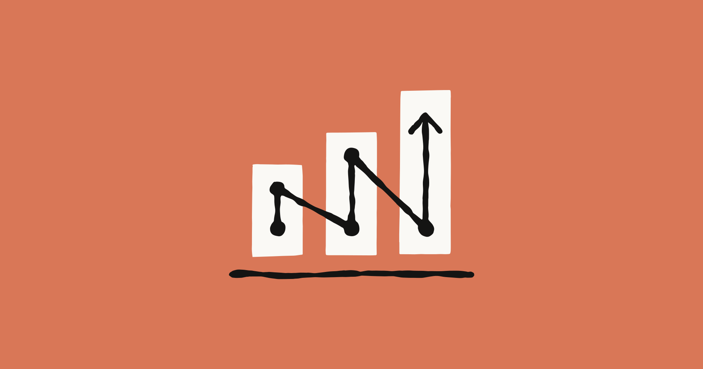
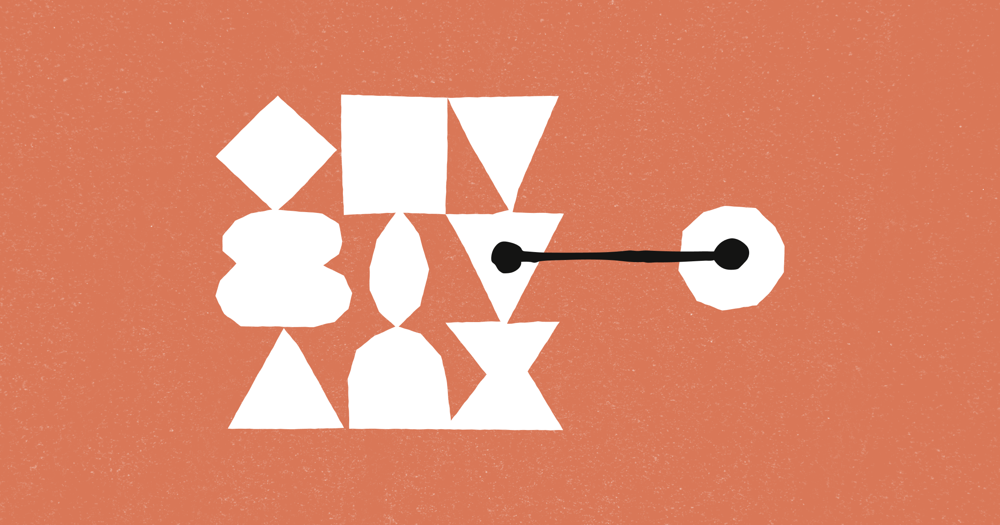

Agents for financial services
Anthropic은 금융 서비스 분야의 반복적인 작업을 자동화할 수 있는 10가지 클로드 에이전트 템플릿을 공개했습니다. 이쪽은 성능 숫자 자랑보다, 개발자가 도구를 어떻게 붙이고 일에 태우느냐가 더 중요해지는 흐름입니다.
엔진 출력표보다, 자주 타는 차에 자동변속기를 달아 놓은 쪽에 더 가깝습니다.
이번 주 LLM은 성능표보다 운영표가 더 중요해진 주간이었습니다.

Anthropic은 금융 서비스 분야의 반복적인 작업을 자동화할 수 있는 10가지 클로드 에이전트 템플릿을 공개했습니다. 이쪽은 성능 숫자 자랑보다, 개발자가 도구를 어떻게 붙이고 일에 태우느냐가 더 중요해지는 흐름입니다.
엔진 출력표보다, 자주 타는 차에 자동변속기를 달아 놓은 쪽에 더 가깝습니다.

Anthropic은 AI 비서와 데이터 시스템을 연결하는 새로운 표준인 Model Context Protocol (MCP)을 오픈소스화했습니다. 이쪽은 성능 숫자 자랑보다, 개발자가 도구를 어떻게 붙이고 일에 태우느냐가 더 중요해지는 흐름입니다.
엔진 출력표보다, 자주 타는 차에 자동변속기를 달아 놓은 쪽에 더 가깝습니다.
이미지 생성은 화질 과시보다 테스트를 얼마나 많이, 싸게 돌릴 수 있느냐가 더 큰 경쟁 포인트로 보였습니다.
Black Forest Labs는 이미지 생성 및 편집 기술이 아직 완벽하지 않다고 밝혔습니다. 가상 착용 기능 또한 실제 제품 경험으로 확장하기에는 한계가 있다고 덧붙였습니다.
한 번 잘 나오는 필터보다, 작업실 조명이 통째로 바뀐 느낌에 가깝습니다.
Midjourney는 최신 Info Drop #13 업데이트를 통해 새로운 기능들을 공개했습니다. 공개된 기능은 16가지 SREF 리텍스처, 15개의 프로필 코드, 그리고 10가지 전문가 프롬프트입니다.
이러한 추가는 사용자들이 이미지 생성 과정에서 질감과 스타일을 더욱 다양하게 제어하고 향상시킬 수 있도록 돕습니다.
음악 생성 쪽은 이번 주에 유독 방향이 선명했습니다. 프롬프트 한 줄 받아 곡을 뽑는 데서 끝나는 게 아니라, 내 파일과 스타일을 바로 들고 들어오게 만드는 쪽으로 확실히 꺾였습니다.
Music Business Worldwide가 음악 생성에서 손이 많이 가던 구간을 줄이는 기능을 내놨습니다. 이건 데모 성능보다 개발 공정, 평가, 장기 실행 같은 진짜 실무 레이어를 두껍게 만드는 변화입니다.
새 데모 영상 하나보다, 백오피스 배선 공사를 다시 한 느낌입니다.
편집/제작 쪽은 새 버튼 하나보다 실제 반복 공정을 얼마나 덜어주느냐가 포인트입니다.
u/MakotoE 쪽에서 이번 주 흐름을 보여주는 공식 업데이트가 나왔습니다. 편집 툴은 성능 과시보다 클릭 수를 줄이고 반복 공정을 덜어내는 쪽에서 체감 차이가 납니다.
새 버튼 하나보다 반복 클릭을 매크로로 묶어버린 쪽에 더 가깝습니다.
레딧 사용자 u/Advanced_Fortune_903이 어도비 포토샵 2026을 35유로에 평생 사용할 수 있는 정품 라이선스를 포함, 다양한 인기 소프트웨어의 영구 활성화를 파격적인 가격으로 제공한다고 밝혔습니다. 월별 또는 연간 구독료 부담 없이 한 번의 결제로 어도비 포토샵 같은 고가 소프트웨어를 영구히 소유할 수 있게 되면서, 개인 사용자나 소규모 기업의 소프트웨어 접근성이 크게 향상될 것으로 기대됩니다.
마치 비싼 월세 대신 한 번에 내는 보증금으로 집을 얻는 것과 같습니다.
3D 쪽은 멋진 결과물보다 후속 수정과 파이프라인 연결이 더 중요해진 흐름입니다.

기존 3D 작업 흐름에서 아이디어 구상과 실제 모델링은 서로 다른 도구에서 분리되어 진행되었습니다. 이제 Flowith Canvas와 Tripo가 통합되면서, 시각적 탐색 단계부터 3D 모델 생성까지의 과정이 끊김 없이 연결됩니다. 이러한 통합 덕분에 작업 과정에서 아이디어의 맥락이 사라지거나 다양한 시안들이 묻히는 일이 줄어듭니다. 결과적으로, 아이디어 구상부터 최종 3D 모델 제작까지의 반복 작업 속도가 현저히 빨라져 생산성이 크게 향상될 것입니다.
마치 두 개의 분리된 길을 하나의 고속도로로 연결하여 목적지까지 더 빠르게 도달하는 것과 같습니다.
뷔르츠부르크 대학 심리역사센터의 아르민 스톡 교수는 Meshy를 활용하여 제한적인 보존 사진들을 3D 프린팅 가능한 흉상으로 만들었습니다. 이제는 과거의 인물들을 단지 사진으로만 만나는 것이 아니라, Meshy 같은 기술 덕분에 물리적인 형태로 복원하여 전시할 수 있게 되어 관람객 경험이 크게 확장됩니다.
마치 낡은 사진첩 속 인물에게 새로운 숨결을 불어넣는 일과 같죠.
에이전트/자동화는 데모보다 실제로 어디까지 맡길 수 있느냐가 핵심입니다.
asheshgoplani/agent-deck 프로젝트가 AI 코딩 에이전트 전용 터미널 세션 관리자로 공개되었습니다. 에이전트 영역은 데모보다 실제 워크플로에 몇 단계까지 맡길 수 있느냐가 승부처입니다.
똑똑한 비서 한 명보다, 자주 하던 심부름에 전용 동선을 깔아 놓은 느낌입니다.
u/Permit-Historical 쪽에서 이번 주 흐름을 보여주는 공식 업데이트가 나왔습니다. 에이전트 영역은 데모보다 실제 워크플로에 몇 단계까지 맡길 수 있느냐가 승부처입니다.
똑똑한 비서 한 명보다, 자주 하던 심부름에 전용 동선을 깔아 놓은 느낌입니다.
이번 주 이슈랑 같이 보면 맥락 잡기 좋은 영상 3개만 골랐습니다. 뉴스형 브리핑 위주로 넣었습니다.